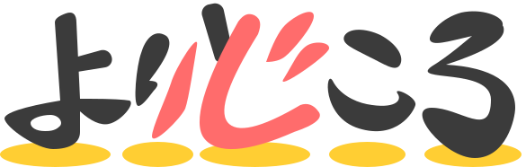

既に会員の方は
ログイン
子供たちの
心の「拠り所」が，
未来を明るくする
44万人
日本全国の不登校児の数
彼らが，誰とも関わることなく，引きこもる日々が続いてしまうと，
どんどん社会復帰は難しくなってしまいます．
でも，まずはそのままの君で大丈夫. 人によって輝く場所は違います.
けれど，不登校児にその居場所を見つけるのは簡単じゃない．親御さんも解決方法が分からず困っています．
なので，子供と同じように苦しみ悩んでいる親御さんが、
24時間何でも相談できる場所を作りました!
代表ごあいさつ
よりどころ 開設にあたって
● しのだ そう
*
小学校6年間で実際に不登校を経験していた．
*
社会復帰を果たしたのち，当時の自分と同じ境遇にある子どもたちを助けるために務めていた会社を辞め，不登校児とその保護者のためのコミュニティを設立．
*
ブログやSNSを活用し情報発信をするとともに，実際に彼らの悩みに寄り添う活動をいくつも行っている．
よりどころ
は，こんなサービス！


44万人
日本全国の不登校児の数
彼らが，誰とも関わることなく，引きこもる日々が続いてしまうと，
どんどん社会復帰は難しくなってしまいます．